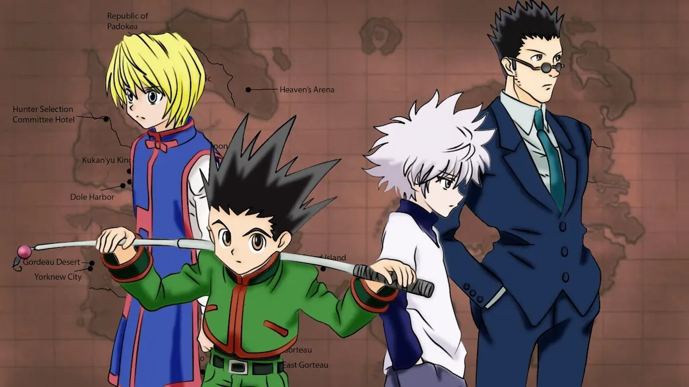

Hunter x Hunter
Anime de aventura · 2011

Por que eu gosto
O anime aborda temas relacionados a amizade e carater, e sabe dosar bem o clima leve e pesado nas cenas.
Ficha técnica
| Gênero | Shonem |
|---|---|
| Lançamento | 2011 |
| Tema | Aventura, fantasia |
| Autor | Yoshihiro Togashi |